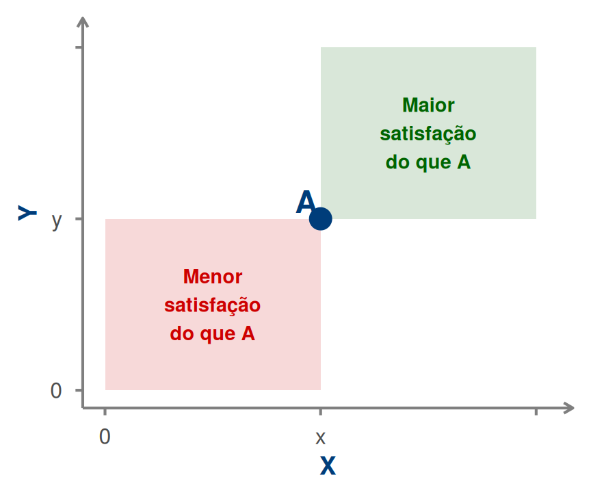
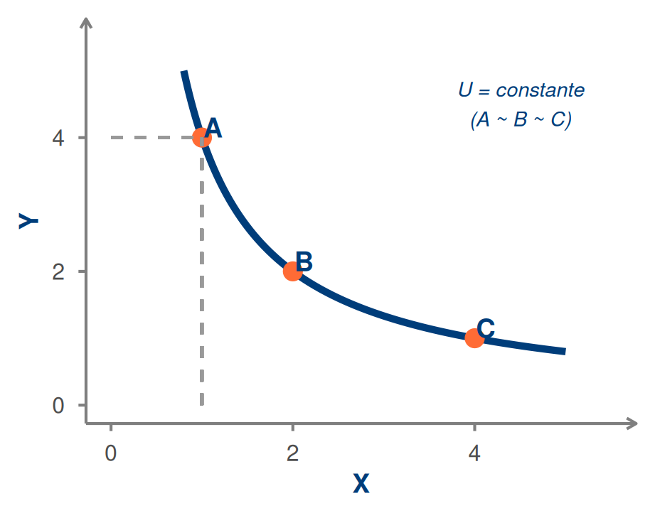
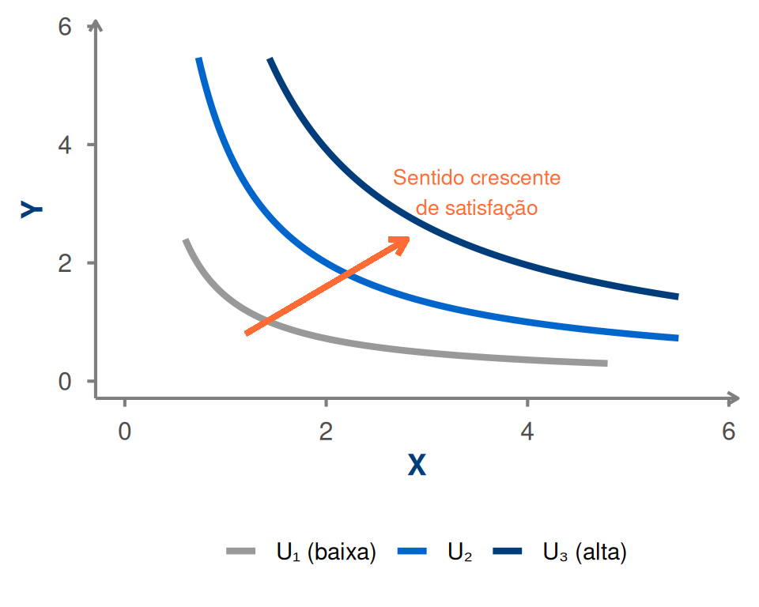
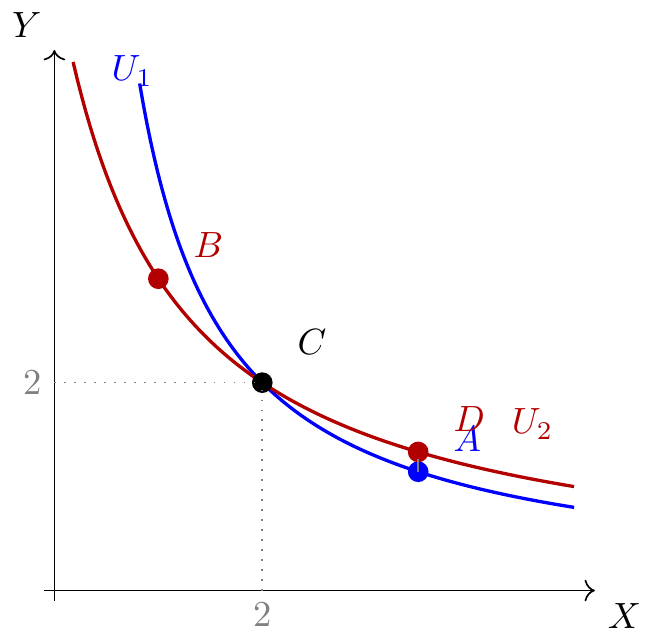

Microeconomia
Aula 5: Preferências e Axiomas de Racionalidade
1 Sumário
- 🤔 A questão das preferências
- ✅ Axioma 1 — Desejabilidade (não saciedade)
- \(\sim\) Curva de indiferença — definição e propriedades
- 📚 Mapa de curvas de indiferença
- ✅ Axioma 2 — Completude
- ✅ Axioma 3 — Transitividade
- 🔗 Racionalidade das preferências
- 📝 Exercícios
2 A Questão das Preferências
O espaço de consumo diz o que o consumidor pode comprar.
. . .
Mas entre todos os cabazes acessíveis, qual o preferido?
. . .
Para comparar cabazes com mais de um bem, precisamos de saber as preferências do consumidor.
. . .
Exemplo: o consumidor prefere \((25, 30)\) a \((30, 20)\)?
- O primeiro tem menos X mas mais Y — a resposta depende de quanto o consumidor valoriza cada bem.
3 Axioma 1 — Desejabilidade
Desejabilidade (não saciedade): consumir mais é sempre melhor, em relação a pelo menos um bem.
Se \(A = (x_A, y_A)\) e \(B = (x_B, y_B)\) com \(x_A \geq x_B\) e \(y_A \geq y_B\) (e pelo menos uma desigualdade estrita), então \(A \succ B\).
4 Desejabilidade — Gráfico
5 E quando um cabaz tem mais de um bem e menos do outro?
Exemplo: o consumidor prefere \((20, 30)\) ou \((30, 20)\)?
. . .
A axioma da desejabilidade não responde a esta questão.
. . .
Precisamos de saber quais os cabazes que lhe são indiferentes — que lhe dão a mesma satisfação.
Quantas laranjas está disposto a abdicar para ter mais uma bolacha, ficando indiferente?
6 Curva de Indiferença
Uma curva de indiferença é o conjunto de todos os cabazes que proporcionam ao consumidor o mesmo nível de satisfação.
. . .
Consequência da desejabilidade:
- Cabazes indiferentes não podem ter mais de ambos os bens (seria preferido)
- Nem menos de ambos (seria preterido)
- \(\Rightarrow\) A curva de indiferença tem inclinação negativa
7 Curva de Indiferença — Gráfico
Warning in geom_segment(aes(x = 1, y = 0, xend = 1, yend = ic_y(1, U0)), : All aesthetics have length 1, but the data has 200 rows.
ℹ Please consider using `annotate()` or provide this layer with data containing
a single row.Warning in geom_segment(aes(x = 0, y = ic_y(1, U0), xend = 1, yend = ic_y(1, : All aesthetics have length 1, but the data has 200 rows.
ℹ Please consider using `annotate()` or provide this layer with data containing
a single row.
A, B e C são indiferentes entre si
8 Axioma 2 — Completude
Completude: dados quaisquer dois cabazes, o consumidor sabe sempre dizer qual a relação de preferência entre eles.
. . .
Consequências:
- Todo o cabaz pertence a alguma curva de indiferença
- Quanto mais alta a curva, maior a satisfação (desejabilidade)
- O espaço de consumo é coberto por um mapa de curvas de indiferença
9 Mapa de Curvas de Indiferença
Warning in geom_segment(aes(x = 1.2, y = 0.8, xend = 2.8, yend = 2.4), arrow = arrow(length = unit(0.3, : All aesthetics have length 1, but the data has 798 rows.
ℹ Please consider using `annotate()` or provide this layer with data containing
a single row.
10 Axioma 3 — Transitividade
Transitividade: se o cabaz A é preferido a B, e B é preferido a C, então A é preferido a C.
\[A \succ B \;\text{ e }\; B \succ C \;\Rightarrow\; A \succ C\]
. . .
De igual modo para indiferença:
\[A \sim B \;\text{ e }\; B \sim C \;\Rightarrow\; A \sim C\]
. . .
A transitividade garante consistência nas escolhas — sem ciclos de preferência.
11 Consequência: Curvas de Indiferença Não se Podem Cruzar

Estas curvas de indiferença não refletem preferências transitivas.
- \(D \succ A\) — mesmo \(X\), \(D\) tem mais \(Y\)
- \(D \sim C\) — ambos em \(U_2\)
- \(C \sim A\) — ambos em \(U_1\)
- Logo, pela transitividade: \(D \sim A\) — contradição! 💥
12 Racionalidade das Preferências
Em contexto de desejabilidade, as preferências dizem-se racionais se forem completas e transitivas.
. . .
| Axioma | Significado |
|---|---|
| Desejabilidade | Mais é melhor |
| Completude | O consumidor compara sempre quaisquer dois cabazes |
| Transitividade | As escolhas são internamente consistentes |
. . .
Outras hipóteses necessárias na teoria do consumidor:
- Informação completa
- Continuidade do espaço orçamental
- Independência das escolhas entre consumidores
13 Curvas de Indiferença “Bem Comportadas”
Uma curva de indiferença diz-se bem comportada se for:
- Convexa em relação à origem — o consumidor prefere diversidade
- Com declive negativo — desejabilidade
- Não se cruza com outras CIs — transitividade
. . .
A convexidade reflete que o consumidor valoriza mais o bem de que dispõe em menor quantidade.
14 📋 Síntese
| Axioma | Consequência gráfica |
|---|---|
| Desejabilidade | Curvas têm declive negativo; curvas mais altas → mais satisfação |
| Completude | Todo o ponto pertence a uma curva de indiferença |
| Transitividade | Curvas de indiferença nunca se cruzam |
15 📝 Escolha Múltipla — Q1
As preferências são consideradas “racionais” quando são:
. . .
- Completas e simétricas
- Transitivas e reflexivas
- Completas e transitivas
- Desejáveis e simétricas
. . .
Resposta: C Em contexto de desejabilidade, racionalidade = completitude + transitividade.
16 📝 Escolha Múltipla — Q2
Se o cabaz A se encontra numa curva de indiferença mais alta do que o cabaz B, então:
. . .
- A é mais barato que B
- B é preferido a A
- A é preferido a B
- A e B são indiferentes
. . .
Resposta: C Pela desejabilidade, curvas mais altas correspondem a maior satisfação → \(A \succ B\).
17 📝 Exercício de Desenvolvimento
Considera os cabazes: \(A = (2, 6)\), \(B = (4, 4)\), \(C = (1, 3)\).
(a) Usando apenas o axioma da desejabilidade, pode afirmar-se que \(A \succ C\)? Justifique.
(b) Sabe-se que \(A \sim B\) (A é indiferente a B). Se um consumidor afirmar que também \(B \succ A\), qual axioma está a ser violado?
(c) Um consumidor afirma que \(A \succ B\), \(B \succ C\) e \(C \succ A\). Que axioma está a ser violado? Que implicação tem no gráfico das curvas de indiferença?
18 📝 Solução
(a) Sim. \(A = (2, 6)\) tem mais X do que \(C = (1, 3)\) (\(2 > 1\)) e mais Y (\(6 > 3\)). Pela desejabilidade, \(A \succ C\) — sem precisar de conhecer as preferências específicas. ✓
(b) \(A \sim B\) significa indiferença mútua. Afirmar \(B \succ A\) (estritamente preferido) contradiz \(A \sim B\). Viola o axioma da completude — as preferências têm de ser internamente consistentes; o consumidor deve ter uma única relação definida entre quaisquer dois cabazes. ✓
(c) Viola o axioma da transitividade. De \(A \succ B\) e \(B \succ C\) deveria seguir-se \(A \succ C\), mas o consumidor afirma \(C \succ A\) — ciclo de preferência impossível.
No gráfico, implicaria que as curvas de indiferença se cruzam, o que é inconsistente com preferências racionais. ✓